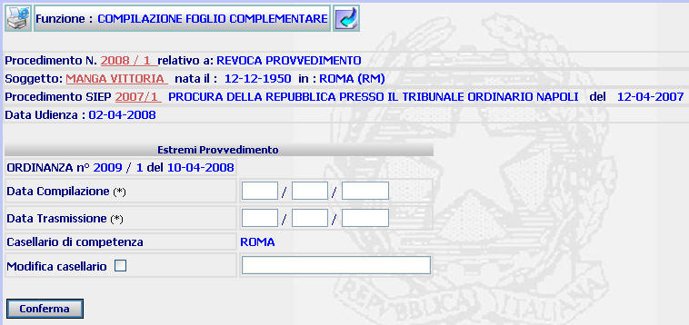
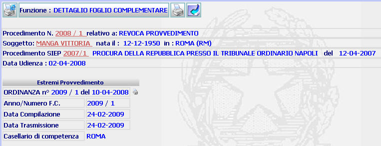
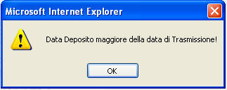
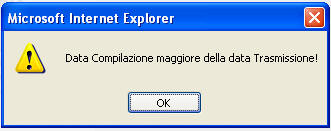
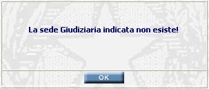

INSERIMENTO -DETTAGLIO DATI PER FOGLIO COMPLEMENTARE: La funzione consente di inserire i dati significativi del foglio complementare e di controllarli e generare la stampa del relativo documento attraverso la maschera di dettaglio.
LE MASCHERE VIDEO
La funzione di inserimento viene realizzata attraverso la maschera seguente.

Il dettaglio invece viene visualizzato attraverso la maschera seguente:

COME FARE PER ...
In entrambe le maschere:
| Per visualizzare il dettaglio del procedimento Sius l'utente deve cliccare sul link relativo all'Anno/Numero del procedimento Sius evidenziato in rosso; |

| Per visualizzare il dettaglio del soggetto l'utente deve cliccare sul link relativo al cognome/nome del soggetto evidenziato in rosso; |

| Per visualizzare il dettaglio del procedimento Siep l'utente deve cliccare sul link relativo all' Anno/Numero del procedimento Siep evidenziato in rosso; |

Nella maschera di inserimento:
|
Per produrre il foglio complementare l'utente deve: |
compilare i campi relativi alla data di compilazione e trasmissione;
selezionare il check button e compilare il successivo campo, nel caso in cui la sede del Casellario indicata dal sistema non sia esatta e se ne debba inserire una diversa;
confermare i dati inseriti selezionando il bottone
Nella maschera di dettaglio:
| Per
generare la stampa del foglio
complementare l'utente deve selezionare il pulsante
|
| Per
generare nuovamente la stampa dell'ordinanza/decreto l'utente deve
selezionare il pulsante
|
CAMPI
I campi da compilare sono i seguenti:
| Data Compilazione | Campo (obbligatorio) nel quale va inserito la data in cui si compila il foglio complementare |
| Data Trasmissione | Campo (obbligatorio) nel quale va inserito la data in cui si trasmette il foglio complementare |
| Modifica Casellario | Campo da utilizzare nel caso in cui la sede del Casellario indicata dal sistema non sia esatta e se ne debba inserire una diversa |
PULSANTI
Oltre ai pulsanti
 e
e
 facenti parte del gruppo di
pulsanti di "Uso Comune"
è presente il seguente pulsante:
facenti parte del gruppo di
pulsanti di "Uso Comune"
è presente il seguente pulsante:
|
PULSANTE |
DESCRIZIONE |
|
|
Questo pulsante ha
lo scopo di avviare il processo di stampa. |
BOTTONI
Oltre ai comandi funzionali relativi al menù verticale è presente il seguente bottone:
|
COMANDI |
DESCRIZIONE |
|
|
A fronte di tale comando, il sistema dopo aver verificato la validità dei dati specificati, presenta la maschera di dettaglio foglio complementare. |
CONTROLLI
Il sistema effettua i seguenti controlli:
| verifica che la data di trasmissione sia uguale o maggiore di quella di deposito, fornendo in caso contrario il seguente messaggio |

|
verifica che la data di compilazione sia uguale o minore di quella di trasmissione, fornendo in caso contrario il seguente messaggio |

|
verifica che esista la sede del Casellario indicata, fornendo in caso contrario il seguente messaggio |
